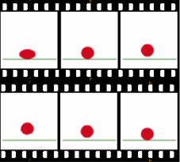
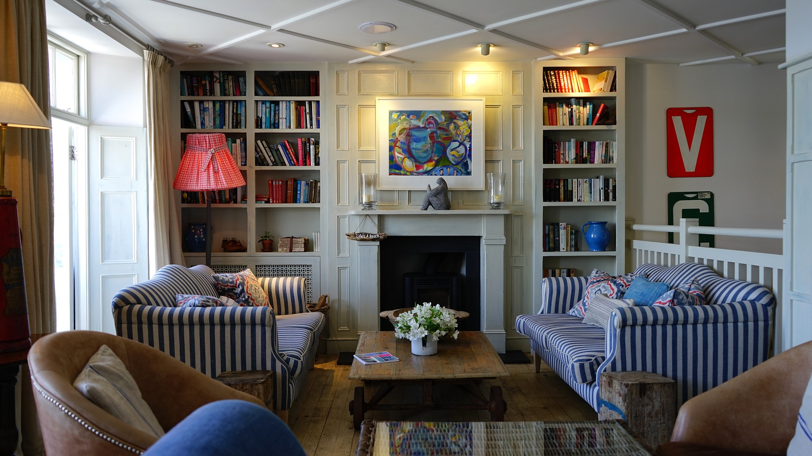

What You Should Know - Animation-ish: Multiplication Movie
 Important Vocabulary
Important Vocabulary
- Multiplication - adding one number several times
- Optical Illusion - something that tricks the eye, making you see something different than what is actually there
- Animation - moving pictures that tell a story
- Group - a set of one or more objects
What Is an Animation?
Animation uses pictures and motion to tell a story or show an action.
Animations can be simple like a bouncing ball. Animations can also be complex like a whole movie.
Animation works by tricking the brain into thinking there is motion. Animation rapidly plays images. The images are almost the same. When pictures change quickly and only have small changes between them, your brain thinks there is movement. This is called an optical illusion.

Multiplication
Multiplication is a mathematical operation used to combine groups of the same number or objects. Multiplying is a quick way to skip-count by the number of objects in each group. When you see the multiplication symbol (×) you should think “groups of.” Take a look at this example: There are 6 groups of 4 hearts, or 6×4. You can skip-count by the number of hearts in each group to find how many hearts there are in all: 4, 8, 12, 16, 20, 24. There are 24 hearts. So, 6 groups of 4 is 24, or 6×4 = 24.
Commutative Property of Multiplication
The Commutative Property of Multiplication is a math rule that says that the order in which we multiply numbers does not change the product. You can regroup the same 24 hearts above differently to show 4 groups of 6, like this:
This multiplication sentence is 4×6 = 24. The order of the two factors was switched from 6 groups of 4 to 4 groups of 6 but the product (24) does not change. The new multiplication sentence 4×6 = 24 shows the Commutative Property of Multiplication.
Associative Property of Multiplication
The Associative Property of Multiplication is a math rule that says that the way in which factors are grouped in a multiplication problem does not change the product. You can regroup the same 24 hearts above to show 4 groups of 3, two times, or (4×3)×2, like this:
Or, you can show four sets of 3 groups of 2, or 4 (3 2). The groupings were changed without changing the order of the factors and the product is still 24. This shows the Associative Property of Multiplication.
Career Connection and Real-World Application
Animator
Animators create animations. Animations are drawings that come to life. People with a career as an animator or “multimedia artists” make visual effects for films and television. They even animate video games. In order to create films and games, animators build storyboards; they may even script, or write, the story. Animators use different types of software to do their job. Animators may multiply to increase an object’s size.
Designer
Interior designers, landscape artists, and graphic designers all use multiplication to do their jobs. Multiplication helps artists and designers make and manage budgets, and buy supplies.
